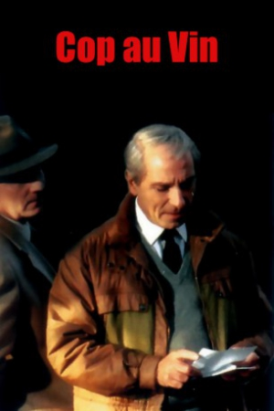
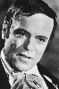

Also known as:Poulet au vinaigre (original title)
Country:France, 110 minutes
Spoken languages:French
Genres:Crime, Mystery, Thriller
Director(s):Claude Chabrol
Writer(s):Dominique Roulet, Dominique Roulet, Claude Chabrol
Video Codec:Unknown
Number: 2813


Certification:
Storyline:
Unorthodox detective Jean Lavardin is called to a provincial French town after a prank turns deadly.
Cast: 


Medium: Bluray,
Comments: Part of: Lies & Deceit - Five Films by Claude Chabrol
Loaned: No
Aspect ratio: Unknown